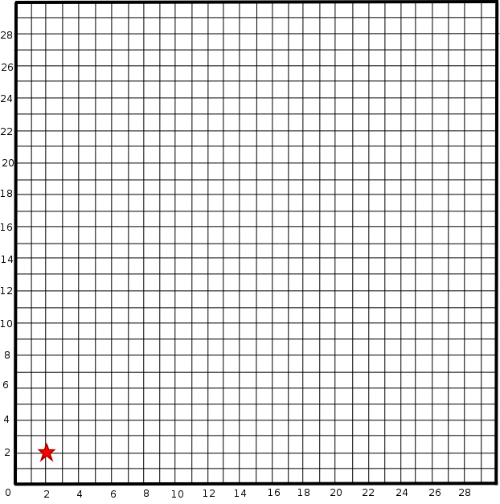
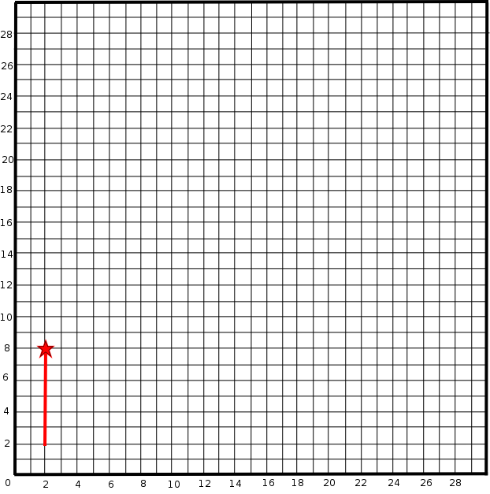
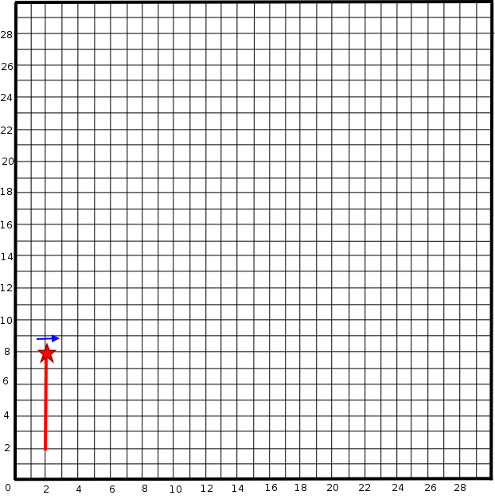
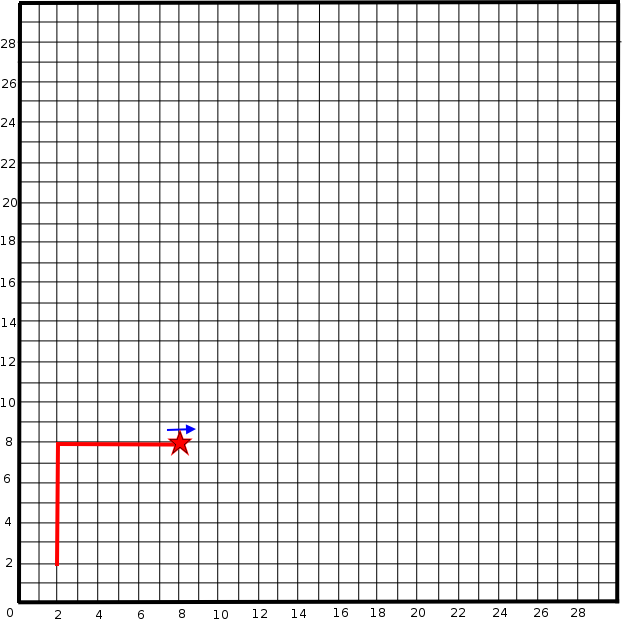
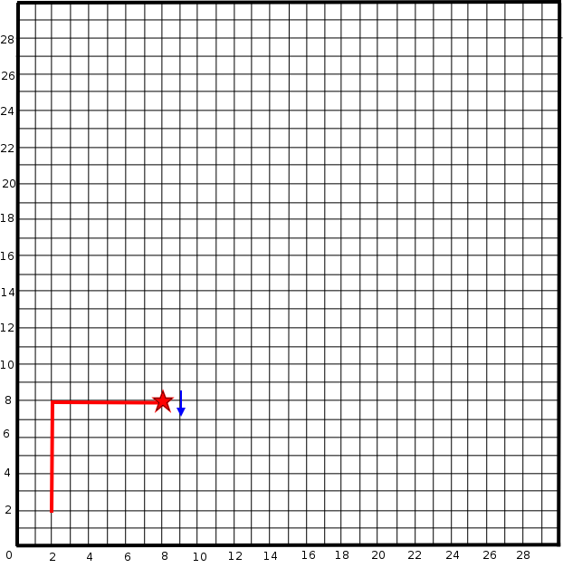
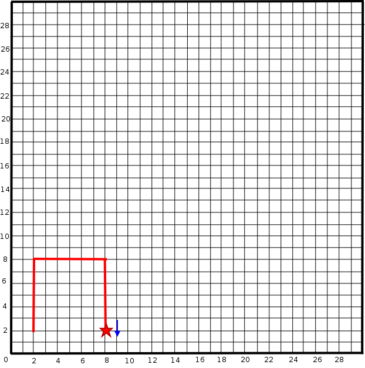
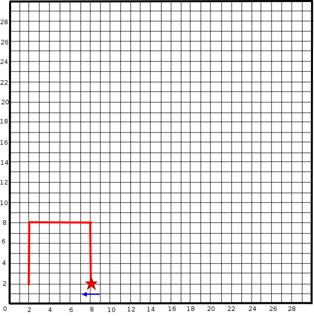
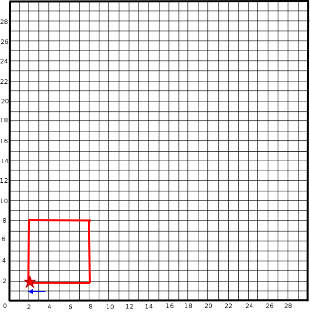
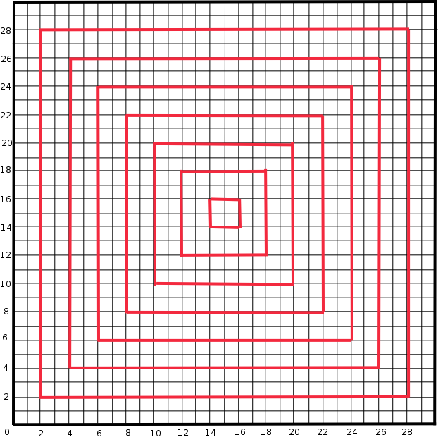

Python For New Programmers
Getting Started - Some Vital Concepts
Learning to Program
- Start with an overview of algorithms
- Then go back to the bottom and work up
Start with the very basic concepts, concentrate on getting them right - if you understand the rules, its much easier to figure out the more complex things later on - give ourselves the tools that we can use to implement the algorithms we've been working on above
- Key concepts repeated throughout the language
The concepts that you will learn in the first couple of days will be repeated and built upon throughout the rest of the course. It is essential that you understand the basic building blocks, as incomplete understanding can limit what you can take from the rest of the course.
- Things are not always as easy as they seem
While the initial theory about something may seem quite easy to understand, it is often not until you get the chance to do things - and to do them without copying code - that the complexities of the implementation hit you. This is why we spend a long time going over concepts, and take time to revisit them as we progress.
Administration
- Please ask questions
- Don't be afraid to interrupt if you haven't quite got the hang of something
- You'll have time to try everything out when we pause for frequent exercises
What is programming?
At the basic level, Writing a set of instructions that can be executed by a computer, resulting in an action being performed. These sets of instructions are Algorithms
In practice there are lots of different levels of this - it might be a simple script that is just a set of instructions to carry something out, or it may be a whole collection of sets of instructions that do different things depending on user interaction. Whatever it is, it can all be broken down into little sets of instructions that perform a task
Algorithms
We're not going to write any code before we've looked at the basic actions of producing a program that carries out a function.
- A set of instructions that, when executed in sequence, perform an action
- We're going to start this off in plain english - no code, or even pseudocode
- Start with every-day tasks and work up to programming ones
Algorithm Design - Making a Mug of Tea
- Fill kettle with water
- Turn kettle on
- Put teabag in mug
- Pour boiling water over teabag
- Brew until tea is required strength
- Remove teabag
- Add required extras (e.g. milk, sugar)
- Stir and serve
What's wrong with this algorithm?
- Quite Vague ('required strength', 'extras')
- Quite Restrictive (asumes you're brewing the tea in a mug and not a teapot)
- But adequate with human interpretation...
- Try this exercise
Using a Specific Instruction Set
With the example above, we have the whole range of the english language to play with.
We're hoping that our audience will understand all of our instructions, but we know that if they don't understand them precisely, they will try to interpret them - to guess what we actually mean.
With a computer, we don't have that luxury, so we need to be more specific
- To communicate with other people, we need a common language that we know
- 'Natural Languages' such as English do not have precise definitions
- Something with an exact definition as to the meaning of each component, and how the components are built up is needed to remove any ambiguity
A Direction Instruction Set
We are going to create a simple instruction set that we can use to draw patterns by following directions.
- move(number of squares)
- Any number between 1 and the size of your paper
- turn(direction)
- set(x,y)
- Set the 'pointer' start point to the x,y grid position given.
We're going to try something to illustrate this concept. Another simple algorithm, but with a specified instruction set, and an activity to try out.
Drawing a square
- set(2,2)
- move(4)
- turn(left)
- move(4)
- turn(left)
- move(4)
- turn(left)
- move(4)
set(2,2)

move(4)

turn(left)

move(4)

turn(left)

move(4)

turn(left)

move(4)

A More complex pattern

A very long winded algorithm?
- Lots of instructions to do what is essentially the same thing over and over again
- Repeated chunks of instructions, performed with different values
- We want to repeat the bits that are the same
- However we don't have enough instructions in our language for this
- What do we need to add to be able to do this?
- A mechanism for repeating thigns
- A mechanism for tracking and using the numbers as they change
Looking for patterns in the instructions
- Each square has a set, four moves and three turns
- The set coordinates increment by two for each square
- The length of line (move) reduces by four each time
New Instructions
- Loop with while:
while condition:- while the condition is true, do all of the code after the semicolon
- As with python, we're going to use whitespace to seperate our blocks of code
- Store information in variables:
- Perform calculations with numerical operators:
Simple Repeat
square = 0
length = 26
start = 2
while square < 7 :
set(start, start)
move(length)
turn(left)
move(length)
turn(left)
move(length)
turn(left)
move(length)
square = square +1
length = length - 4
start = start + 2
- Are there any limitations with this as an algorithm?
- What if you want to change the gap between the squares?
- What if you want to use a bigger or smaller grid?
A generic algorithm for different sized grids
- How do you know when to stop?
- How do you calculate the changing lengths and set points?
For any sized grid
start = 2
step = 2
length = 30 - (2 * start)
turns = 0
while length >= step:
set(start, startstart)
move(length)
while turns < 3 :
turn(left)
move(length)
turns = turns +1
turns = 0
length = length - (2 * step)
start = start + step